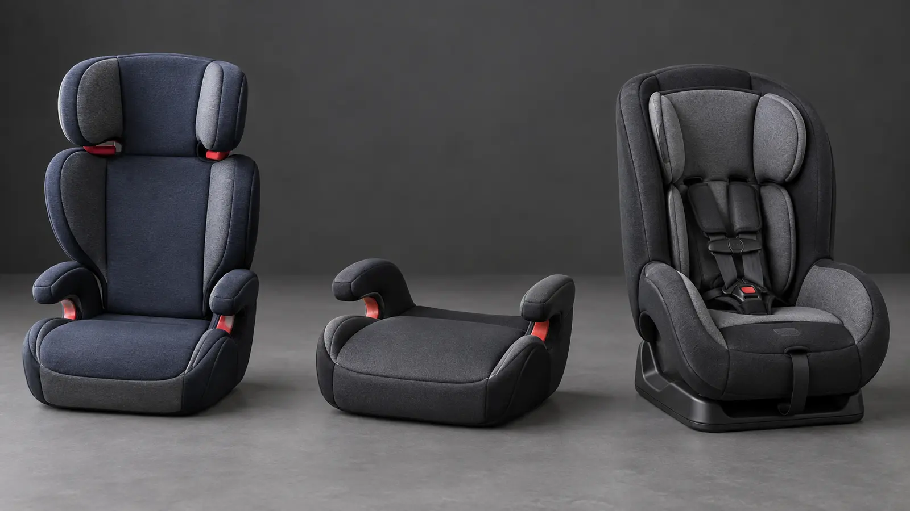

Kids’ Booster Seats: High-Back vs Backless vs Harnessed—and the Belt-Fit Rule
Age is not a shopping shortcut. Keep the harness until its stated limits, then choose the booster that makes the vehicle belt fit correctly on every ride.

Representative restraint categories shown outside a vehicle. Original AI-assisted editorial photograph; no model, fit, rating or certification is implied.
The blunt version: do not move a child out of a harness because a birthday arrived or a backless booster packs smaller. Follow the exact restraint limits, the vehicle manual and the child’s actual belt fit. A certified child-passenger-safety technician can check the result; a product listing cannot see your child or back seat.
The transition order matters
The National Highway Traffic Safety Administration says to keep a child in a forward-facing seat with a harness and tether until the child reaches the top height or weight allowed by that seat’s manufacturer. Only then is it time for a booster, still in the back seat. A booster’s job is not to restrain the child by itself. It raises and positions the child so the vehicle’s lap-and-shoulder belt crosses stronger parts of the body.
New York law currently requires an appropriate child restraint until the eighth birthday, but the state’s own safety guidance says booster use commonly continues until the vehicle belt fits properly, typically between ages eight and twelve. Legal minimum and safe fit are not synonyms. New York and NHTSA both say children younger than thirteen should ride in the back seat.
Which category solves the real problem?
Use this comparison only after the child has outgrown the current forward-facing harness by its stated limit.
High-back booster
Fits: a belt-ready child who benefits from an integrated shoulder-belt guide or added side support.
Check: vehicle head restraint rules, shoulder-belt routing, width, seating position and whether the seat may contact the vehicle seatback.
Backless booster
Fits: a belt-ready child in a vehicle position with adequate head support and compatible lap-and-shoulder belt geometry.
Check: the exact minimum height/weight, required head-restraint position, belt guide if supplied and whether the child stays upright.
Harnessed combination seat
Fits: a child who still fits the harness or is not ready to sit correctly for the whole trip. Many later convert to booster mode.
Check: harness and booster limits separately, allowed installation method, top tether and the vehicle’s anchor limits.
The rule: the correct category is the one the child is eligible and ready to use, that fits the vehicle, and that an adult can use exactly as instructed every time.
The five-point belt-fit check
Run this in the exact seating position, not on a kitchen chair. The child’s back should stay against the vehicle seat or booster back. Knees should bend naturally at the seat edge. The lap belt should lie low and snug across the upper thighs, not the stomach. The shoulder belt should lie snug across the middle of the shoulder and chest, not the neck, face or arm. The child must maintain that position for the entire trip.
If the child slouches, leans, places the shoulder belt behind the back or under an arm, or cannot stay positioned while asleep, the setup does not pass. Return to an appropriate harnessed restraint if the child still fits one and the manuals allow it, or get help from a certified technician. Never alter the belt, add an unapproved pad or use an aftermarket positioning device unless both the restraint and vehicle instructions specifically permit it.
High-back versus backless: the honest tradeoff
A high back can provide a shoulder-belt guide and physical support that makes correct positioning easier in some vehicles. It can be useful when a child tends to lean during sleep. But it is not automatically compatible with every fixed head restraint or seat contour, and the extra structure does not replace the vehicle belt.
A backless booster is lighter and often easier to move between vehicles. That convenience is real. It also places more responsibility on the vehicle’s own seatback or head restraint and on the child’s ability to remain upright. Read the booster instructions for required vehicle support. If the vehicle position lacks the support or belt geometry the booster requires, choose another position or restraint.
Do not make the choice from a generic statement that one category is always safer. The best available option is the one used correctly, in a permitted seating position, for a child who meets its limits and behavior requirements. NHTSA notes that not all car seats fit all vehicles and recommends test-fitting before purchase.
What to check before buying
Child limits: exact minimum and maximum height and weight for the mode you plan to use. Combination-seat harness and booster limits are different.
Vehicle position: lap-and-shoulder belt, head-restraint shape, seat contour, buckle access and any manufacturer restrictions.
Daily behavior: the child can remain centered and upright even while talking, reaching or sleeping.
Width: adjacent restraints and passengers can buckle without pushing, twisting or routing belts incorrectly.
Belt guide: it holds the shoulder belt in the permitted position without creating slack or interfering with retraction.
Empty-seat control: follow the booster instructions about lower-anchor attachment or buckling the empty booster so it does not become a loose object.
Cleaning: covers and components can be cleaned only by the method the manufacturer allows; harsh cleaners can damage materials.
Registration and recalls: the maker, model number and date are identifiable, and you register the seat for safety notices.
What not to buy
Skip any seat with missing labels or instructions, unknown crash history, an active unresolved recall, visible damage, missing parts or an expiration status you cannot verify with the manufacturer. NHTSA publishes a used-seat checklist, but “looks fine” is not a history. Do not buy a travel-only novelty restraint, belt clip or positioner that claims to replace a compliant child restraint without clear U.S. certification and manufacturer documentation.
Skip a backless booster solely chosen because it fits in a backpack when the vehicle seat offers inadequate head support. Skip a large high back that prevents the shoulder belt from moving freely. Skip a combination seat if the family assumes the booster mode will fit later without testing it later.
Trip use: the five-minute setup
Before every drive, place the booster flat and flush as the instructions require, route the lap-and-shoulder belt through every required guide and remove bulky outerwear that changes fit. Have the child buckle, then an adult checks the lap belt, shoulder belt and slack. Lock the vehicle door only after the check is complete. The family parking-lot plan keeps that process away from moving cars.
For carpools and rentals, confirm fit again. A booster that works in one rear seat may not work in another. Store the manual or a downloaded copy with the seat. On a long drive, the road-trip packing system should keep luggage from blocking buckles or becoming loose cargo.
Crash, cleaning, expiration and recalls
Follow the manufacturer’s after-crash instructions and NHTSA guidance. Do not reuse a restraint after a crash simply because no crack is visible. Check labels for useful-life information and contact the manufacturer when the date or history is unclear. Register the seat, save the model number and date of manufacture, and check the NHTSA recall database.
Food, motion sickness and muddy shoes are ordinary family problems. Clean only by the manual. Do not machine-wash, soak, lubricate or replace harness parts unless permitted. The motion-sickness car plan helps protect the restraint without unsafe add-ons.
Get a human fit check
New York’s Governor’s Traffic Safety Committee lists fitting stations and check events. NHTSA also provides an inspection-station finder. Most inspections are free. Bring the child, restraint, vehicle and both manuals. The goal is not a technician installing it while you watch; the goal is learning how to reproduce the correct setup yourself.
Buying paths
Affiliate disclosure: The shopping links in the comparison below may earn Mr Adventure Dad a commission at no extra cost to you. They are category searches, not product endorsements. Confirm the child, vehicle, instructions, certification, recall status and technician fit before purchase.
Start with the category that passes the gates
High-back belt-positioning booster: when the child is booster-ready and a belt guide or added support helps in the exact vehicle.
Backless belt-positioning booster: only when the vehicle provides the required head support and the child maintains position.
Harness-to-booster combination seat: when the child still needs a harness or the family wants a later booster mode with separately verified fit.